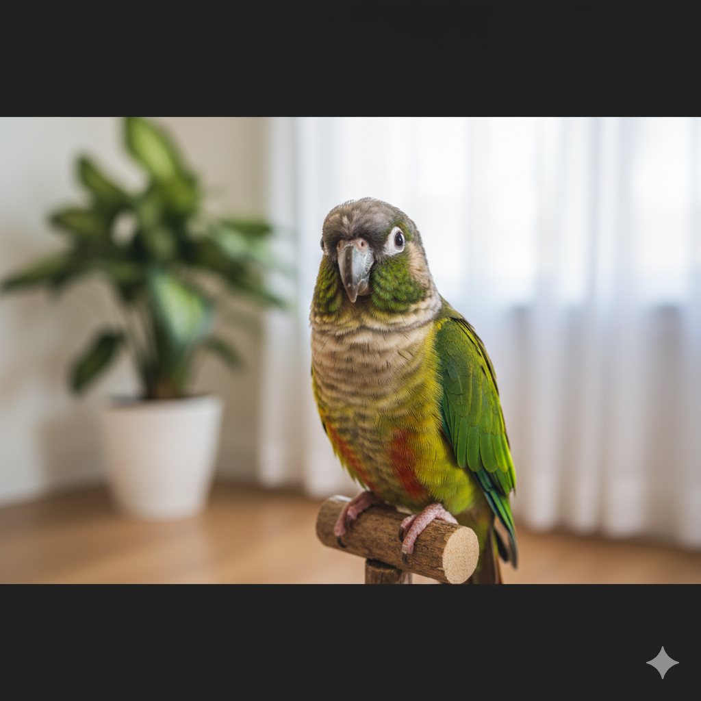

Pássaros: Cores e Cantos
Pássaros como calopsitas e periquitos podem ser ótimos pets, trazendo alegria e música para o ambiente. Exigem cuidados específicos com sua gaiola e alimentação.
Cuidados Básicos
- Manter a gaiola sempre limpa.
- Oferecer uma dieta balanceada com sementes e frutas.
- Proporcionar brinquedos para estimulação mental.
- Permitir voos seguros fora da gaiola (se aplicável).